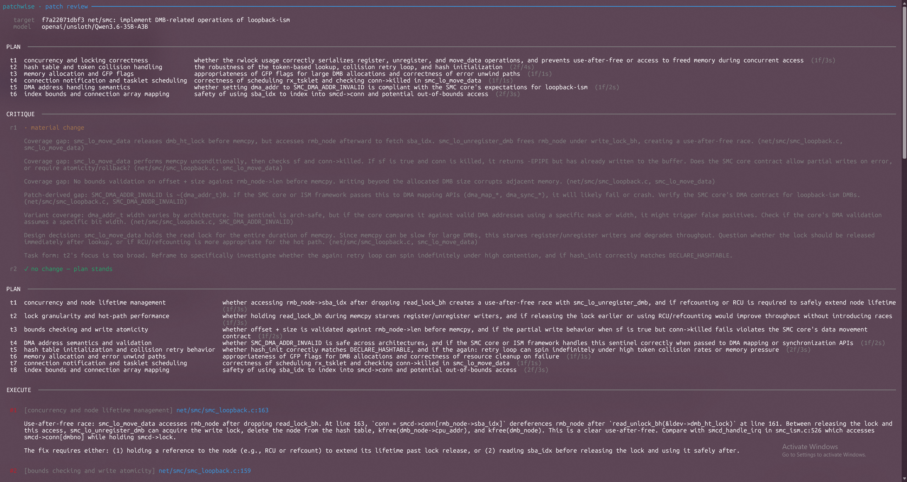
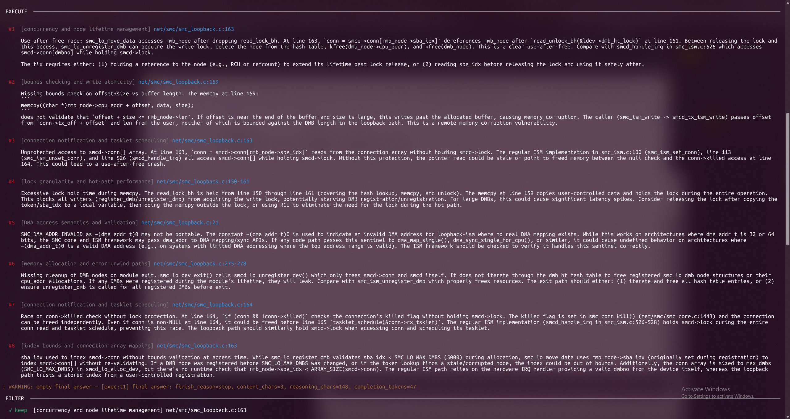
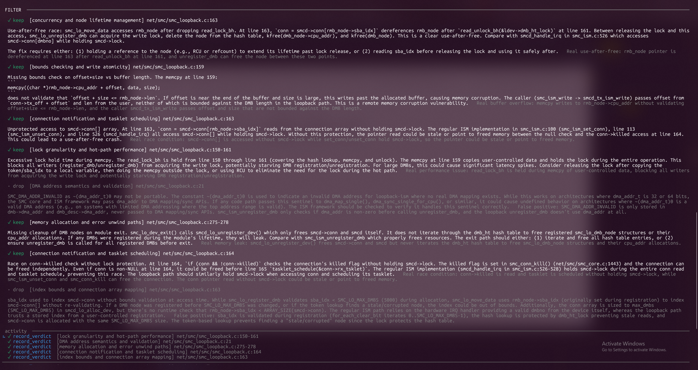
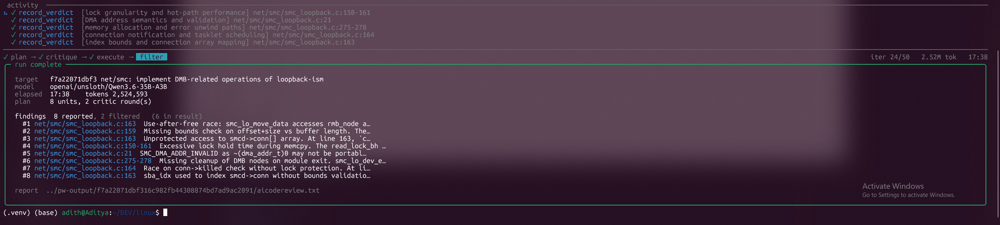

October 2026 · PatchWise 0.9.3
I've been playing with PatchWise and wanted to see if it could actually find bugs in real kernel code, especially with a local model on my pc. Borrowing Sashiko's idea of reviewing a known buggy commit, I ran it on a commit I knew had a real bug and saw what happened. (I ran Claude Code's /code-review on the same commit for comparison, same model and setup, but this is really a story about PatchWise.)
I ran git log --grep "Fixes:" -n 10 on linux-next/master and grabbed a fix-bug pair I could understand. The commit f7a22071dbf3 added DMB (Data Move Buffer) registration and data move operations for the SMC loopback ISM device.
The bug was straightforward: a missing bounds check on a memcpy, an OOB access:
memcpy((char *)rmb_node->cpu_addr + offset, data, size)offset + size was never validated against rmb_node->len.
It was fixed over two years later in 78237e3c0720 ("dibs: loopback: validate offset and size in move_data()").
| CPU | AMD Ryzen 5 7600X |
|---|---|
| GPU | NVIDIA RTX 4070 Ti Super |
| VRAM | 16 GB |
| RAM | 32 GB |
The model is 22.9 GB after Q4 quantization but only has 3B active parameters, so it works on my machine, though I had to tune llama.cpp carefully. About 14 GB of dedicated GPU VRAM and about 29 GB of system RAM was the usage (all of this was in WSL2 while I had a browser open on Windows :D). Here's the full command:
llama-server --model ~/DEV/models/Qwen3.6-35B-A3B-MTP-GGUF-UD-Q4_K_XL.gguf \
--no-mmproj \
--alias "unsloth/Qwen3.6-35B-A3B-MTP-GGUF" \
--temp 0.6 \
--top-p 0.95 \
--top-k 20 \
--min-p 0.00 \
--port 8001 \
--ctx-size 131072 \
--cache-type-k q4_0 \
--cache-type-v q4_0 \
-ngl 99 \
--n-cpu-moe 24 \
--no-mmap -b 32768 \
-ub 2048 \
-t 10 \
--chat-template-kwargs '{"preserve_thinking": true}' \
--flash-attn on \
--spec-type draft-mtp \
--spec-draft-n-max 2 \
--reasoning-preservePrompt processing ran at 1000–2000 tokens/sec, decoding at 60–70 tokens/sec. Not instant, but workable.
I reset the linux repo to the buggy commit before each review, so neither tool had access to the fix.
PatchWise uses LiteLLM, which speaks the OpenAI API format. llama.cpp already exposes that, so the config was three lines:
# ~/.config/patchwise_config.yaml
ai:
model: openai/unsloth/Qwen3.6-35B-A3B-MTP-GGUF
provider: http://localhost:8001/v1Then I ran it:
patchwise --output-dir ../pw-output --reviews AiCodeReview \
--commits f7a22071dbf3
That was it. PatchWise ran for 16m45s total time (16m18s waiting for AI response). It loaded networking-core.md from masoncl/review-prompts, read 10 unique files, grepped for patterns across the codebase, looked up struct definitions and helper macros, and recorded 8 initial findings. It then re-examined the code to filter false positives, keeping 6 and dropping 2 with proof chains. The observability log shows 76 tool calls made. A total of 2.57M tokens were consumed (2.52M input - 95% cached, 44.9k output).
PatchWise did not cheat — there were zero git tool calls, no git log, no git show, no search for the fix commit. It independently arrived at the original finding.
For Claude Code v2.1.296, I renamed .git to .git_disabled (so it wouldn't cheat) and pasted the diff inline:
/code-review the HEAD commit (f7a22071dbf3)
<git show f7a22071dbf3>Claude Code was run on the same linux repo. I also tried Sashiko but it got stuck at stage 4/10 (regularly getting transient errors and retrying with backoffs, probably because of the stages running in parallel). I had to kill it after hours.
Six confirmed issues, plus two it correctly dismissed as false positives after re-examining the code.
memcpy((char *)rmb_node->cpu_addr + offset, data, size);offset + size <= rmb_node->len. If offset is near the end of the buffer and size is large, this writes past the allocated buffer, causing memory corruption. The caller (smc_ism_write -> smcd_tx_ism_write) passes offset from conn->tx_off + offset and len from the user, neither of which is bounded against the DMB length in the loopback path. This is a remote memory corruption vulnerability.
smc_lo_move_data accesses rmb_node after dropping read_lock_bh. At line 163, conn = smcd->conn[rmb_node->sba_idx] dereferences rmb_node after read_unlock_bh(&ldev->dmb_ht_lock) at line 161. Between releasing the lock and this access, smc_lo_unregister_dmb can acquire the write lock, delete the node from the hash table, kfree(dmb_node->cpu_addr), and kfree(dmb_node). This is a clear use-after-free. Compare with smcd_handle_irq in smc_ism.c:526 which accesses smcd->conn[dmbno] while holding smcd->lock.
conn = smcd->conn[rmb_node->sba_idx] reads from the connection array without holding smcd->lock. The regular ISM implementation in smc_ism.c:100 (smc_ism_set_conn), line 113 (smc_ism_unset_conn), and line 526 (smcd_handle_irq) all access smcd->conn[] while holding smcd->lock. Without this protection, the pointer read could be stale or point to freed memory between the null check and the conn->killed access at line 164. This could lead to a use-after-free crash.
read_lock_bh is held from line 150 through line 161 (covering the hash lookup, memcpy, and unlock). The memcpy at line 159 copies user-controlled data and holds the lock during the entire operation. This blocks all writers (register_dmb/unregister_dmb) from acquiring the write lock, potentially starving DMB registration/unregistration. For large DMBs, this could cause significant latency spikes. Consider releasing the lock after copying the token/sba_idx to a local variable, then doing the memcpy outside the lock, or using RCU to eliminate the need for the lock during the hot path.
smc_lo_dev_exit() calls smcd_lo_unregister_dev() which only frees smcd->conn and smcd itself. It does not iterate through the dmb_ht hash table to free registered smc_lo_dmb_node structures or their cpu_addr allocations. If any DMBs were registered during the module's lifetime, they will leak. Compare with smc_ism_unregister_dmb which properly frees resources. The exit path should either: (1) iterate and free all hash table entries, or (2) ensure unregister_dmb is called for all registered DMBs before exit.
if (conn && !conn->killed) checks the connection's killed flag without holding smcd->lock. The killed flag is set in smc_conn_kill() (net/smc/smc_core.c:1443) and the connection can be freed independently. Even if conn is non-NULL at line 164, it could be freed before line 165 tasklet_schedule(&conn->rx_tsklet). The regular ISM implementation (smcd_handle_irq in smc_ism.c:526-528) holds smcd->lock during the entire conn read and tasklet schedule, preventing this race. The loopback path should similarly hold smcd->lock when accessing conn and scheduling its tasklet.
SMC_DMA_ADDR_INVALID as ~(dma_addr_t)0 may not be portable. The constant ~(dma_addr_t)0 is used to indicate an invalid DMA address for loopback-ism where no real DMA mapping exists. While this works on architectures where dma_addr_t is 32 or 64 bits, the SMC core and ISM framework may pass dma_addr to DMA mapping/sync APIs. If any code path passes this sentinel to dma_map_single(), dma_sync_single_for_cpu(), or similar, it could cause undefined behavior on architectures where ~(dma_addr_t)0 is a valid DMA address (e.g., on systems with limited DMA addressing where the top address range is valid). The ISM framework should be checked to verify it handles this sentinel correctly.
smc_lo_register_dmb validates sba_idx < SMC_LO_MAX_DMBS (5000) during allocation, smc_lo_move_data uses rmb_node->sba_idx (originally set during registration) to index smcd->conn[] without re-validating. If a DMB node was registered before SMC_LO_MAX_DMBS was changed, or if the token lookup finds a stale/corrupted node, the index could be out of bounds. Additionally, the conn array is sized to max_dmbs (SMC_LO_MAX_DMBS) in smcd_lo_alloc_dev, but there's no runtime check that rmb_node->sba_idx < ARRAY_SIZE(smcd->conn).
PatchWise's aicodereview.txt is an inline review that annotates the commit diff directly, with findings bracketed next to the relevant lines. Here's the full output:
Three findings. Two overlapped with PatchWise, one was unique.
smc_lo_move_data reads smcd->conn[rmb_node->sba_idx] while only holding the read side of dmb_ht_lock. However, the smcd->conn array is protected by smcd->lock (a spinlock), as shown in:
smc_ism_set_conn() (line 99) — writes to smcd->conn[] under smcd->locksmc_ism_unset_conn() (line 112) — writes to smcd->conn[] under smcd->locksmcd_handle_irq() (line 525) — reads smcd->conn[] under smcd->locksmcd->lock (or at minimum a read-side equivalent) when accessing smcd->conn[]. Currently, smc_lo_move_data could race with smc_ism_set_conn/unset_conn, leading to use-after-free or NULL dereference.
smc_lo_dev_exit() → smcd_lo_unregister_dev() only frees smcd->conn and smcd. It does not iterate over and free the DMB hash table (ldev->dmb_ht). If any DMBs are still registered when the module unloads, all smc_lo_dmb_node structs and their cpu_addr buffers are leaked.
sf (shutdown/finish) is true and conn is NULL or killed, the function returns -EPIPE after already performing the memcpy. The data is written to the RMB buffer but the caller (smc_ism_write) receives an error. This is inconsistent — either the data shouldn't be copied, or the error shouldn't be returned.
PatchWise found the bounds check bug, the one that was later fixed. It also found five more issues that Claude Code missed. Perhaps, it's that I missed "make no mistakes" :)
Setting up automated code review with a local model is genuinely easy now. PatchWise config was three lines of YAML. No API keys, no cloud calls, no usage limits. Point it at a commit and it does its thing.
How you structure the analysis matters more than the model size. Same model, same commit, same PC. One tool found the correct bug, one didn't.
Models that fit in 32 GB of RAM + 16 GB of VRAM can catch real bugs. This wasn't Fable or Astra. It was a Q4 quantized model running entirely on my RTX 4070 Ti Super, with llama.cpp tuned to squeeze through the memory constraint. The tooling made the difference: it gave the model context and structure that a single prompt doesn't.
PatchWise runs in four phases: plan -> critic -> exec -> filter. Click any screenshot to inspect it full-size.




All the source data is in this repo if you want to dig into it:
aicodereview.txt — PatchWise final review outputclaude-code-review.txt — Claude Code review outputobservability.json — PatchWise execution metricstool_calls.log — PatchWise tool call trace (77 calls)patchwise-ui.log — PatchWise full console outputllama-server.log — llama.cpp server log